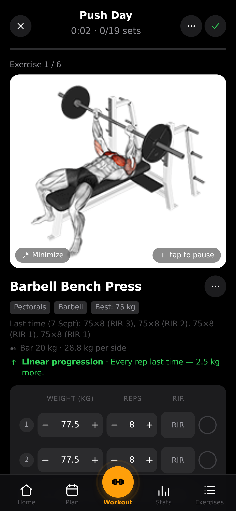

openGym
A free, open-source gym and body-weight tracker you run on your own server - no subscription, no ads, your data stays with you.
Run your own workout tracker on a server you control and get guided sessions with last time's weights pre-filled, rest timers, a muscle map and progress charts - free, no ads, no telemetry.

How does it work?
You want to track your gym workouts and body weight, but every app either costs money each month, shows ads, or keeps your data on someone else's server.
You log sets and weights in a subscription app and wonder where your years of workout history would go if the company raised prices or shut down.
You open the app in your browser or on your phone and tap into today's planned workout.
It's Push Day - the app shows your routine with bench press, overhead press and flyes, weights from last time already filled in, and a rest timer ready.
Your weekly workout plan, the exercises and weights you choose, and your body weight. Or import your history from another app.
Import your FitNotes, Strong or Hevy history (CSV or API key) and pick up where you left off, or start fresh from one of four starter plans (Push/Pull/Legs, Upper/Lower, Full Body, 5x5).
It guides your workout with pre-filled weights, animated exercise demos, a rest timer, and tracks your progress over time.
- Shows your planned workout with weights from last time, animated demos of each exercise, and a rest timer that starts when you finish a set
- Tracks your sets, reps and weight, detects personal records, and calculates your estimated one-rep max for each exercise
- Charts your progress: a muscle map showing trained, recovering and resting muscles, body-weight trend against your goal, and strength history per exercise
The README demo: start a Push Day, see bench press with your last weight pre-filled and a diagram of which muscles work, log your sets, and the app tells you whether to add weight next time.
A complete workout log on a server you own, backed up by copying one folder.
- A full workout historyEvery set, rep and weight you've ever logged, plus personal records and estimated max lifts - stored in a folder on your server
- Progress chartsBody-weight trend, strength history per exercise, a muscle map, and before/after progress photos with a slider
- Your data, portableExport everything as one JSON file, or share a plan as a small file or PDF - no lock-in
What changes for me?
Without it
- Tracking workouts means paying a monthly subscription, seeing ads, or trusting a company with years of personal health data that lives on their server.
- Switching gym apps means starting over - your workout history, personal records and progress photos are trapped in the old app.
With it
- A gym tracker that runs on your own server - free, no ads, no telemetry. Your data is a folder you can back up, move or delete.
- Import your history from FitNotes, Strong, Hevy or Apple Health and keep going. Export everything as JSON if you ever want to leave.
How hard is it to try?
Effort
- Try the live demo at opengym.ch/demo to see what the app looks like with sample data - no install needed.
- To run your own: clone the project, copy
.env.exampleto.env, rundocker compose pull && docker compose up -d, and openlocalhost:8080in your browser. - Tap Create profile, set up a weekly plan from one of the starter templates, and run a workout to see the guided session, rest timer and muscle map.
What it takes on your computer
- Space on disk
- Docker images (size not listed in README). Exercise media downloads ~140 MB on first launch. Android APK available from the Releases page.
- Memory while it runs
- No data found. Runs as a Node.js API and nginx web server inside Docker containers.
- Runs on
- Web browser (any device, works as a home-screen app). Android APK. iPhone via Safari (add to home screen). Server needs Docker with Compose (images for amd64 and arm64). Kubernetes and Helm guides are also available.
Paste this into Claude Code. It runs your safety scan first, then a 10-minute test.
/skillspector https://github.com/DuarteSantos8/openGym If that scan passes: try the live demo at opengym.ch/demo, or run `docker compose up -d` and create a profile at localhost:8080. Start a Push/Pull/Legs plan and run one workout. 10 minutes max.
Should I?
Great if you...
- You want a gym tracker that keeps your data on your own server - no subscription, no ads, no telemetry, and you can back it up by copying one folder
- You already track workouts in FitNotes, Strong or Hevy and want to move to something you control without losing your history
Skip it if...
- You don't want to run a server - openGym needs Docker or a computer you leave on, which is more work than downloading an app from the store
- You want a polished, battle-tested app today - openGym is 90 days old and still releasing features fast (v1.3 to v1.4 in the last month)
Is it safe?
- Security advisories: 0GitHub's advisory list, checked Oct 16
- Searches for CVEs, vulnerabilities, malware and scams11 results read, including the national CVE database: nothing found
- Are the stars earned?12.7K stars, 75 contributors, 1.8K commits. findarepo: looks organic (100/100)
Watch out for
- The exercise images and animations are copyrighted third-party content. They are licensed for use in openGym only. Self-hosted servers get 180 px images; forks must keep the copyright notice intact.
- Mostly one developer. 1,805 commits from Duarte Santos. The maintainer says code, tests and docs are partly drafted with AI (Claude Code) with human review. Long-term maintenance depends on one person.
- AGPL-3.0 license. If you modify the code and run it as a web service, you must offer your source under the same license. This matters if you plan to customize it for a gym or a team.
- Passkey login needs HTTPS on a domain. The quick Docker setup works on localhost, but using your phone's fingerprint or face to log in requires a domain with HTTPS - the README links to guides for Cloudflare Tunnel, Caddy and others.
Who's using it, and for what?
openGym is 90 days old and growing fast. Named real-world uses are hard to find at this stage - adoption shows in forks, mirrors and the active Discord.
We couldn't find anyone describing real use of it yet. That's normal for a brand-new repo, and it's worth knowing.
Who's talking about it
- findarepoDuarteSantos8/openGym on findarepo
- TelegramYour workout log doesn't need someone else's cloud
- AlternativeToopenGym on AlternativeTo